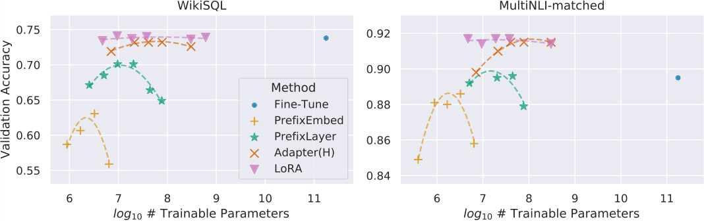

跨模型实证：少量参数能否保住任务质量
实证章节按模型规模逐步放大：先看 GLUE，再看生成任务，最后把方法推到 GPT-3 175B，从而同时检验参数效率与质量保持。
在 RoBERTa、DeBERTa、GPT-2 和 GPT-3 上，LoRA 与 full fine-tuning、adapter、prefix tuning、bias-only 等方法比较。GLUE 表显示 RoBERTa-base 的 LoRA 只训练约 0.3M 参数而平均分 87.2，DeBERTa-XXL 用约 4.7M 参数达到 91.3；GPT-2 的 E2E NLG 以及 GPT-3 的 WikiSQL、MultiNLI-m、SAMSum 则把比较推进到生成与超大模型。 [T02] [T03] [p.6]
表 4：GPT-3 175B 上不同适配方法的表现。 〔T04〕
